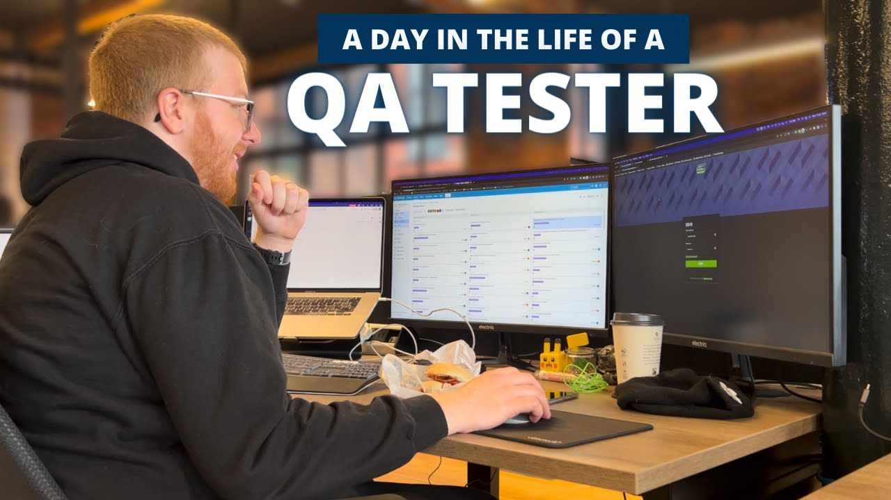

About Me
Get to know who I am and how I approach software testing.
Who I Am
My name is Yousef, and I am a Software Development Engineer in Test (SDET) with experience in web application testing, automation frameworks, and working in Agile environments.
I focus on making sure that applications are not only functional, but also reliable and easy to use. I enjoy designing test scenarios, building automation scripts, and finding bugs before real users do.
Tools & Technologies
- Playwright & Cypress (UI & API Automation)
- JavaScript / TypeScript
- SQL for database validation
- Postman / REST API testing
- Git, GitHub, and CI/CD tools
Testing Approach
I like to combine clear test planning with automation where it makes sense. That often means:
- Understanding the business requirements and user flows
- Designing test cases for high-risk and high-impact features
- Automating stable, repeatable scenarios (like regression suites)
- Collaborating with developers to quickly triage and fix issues
